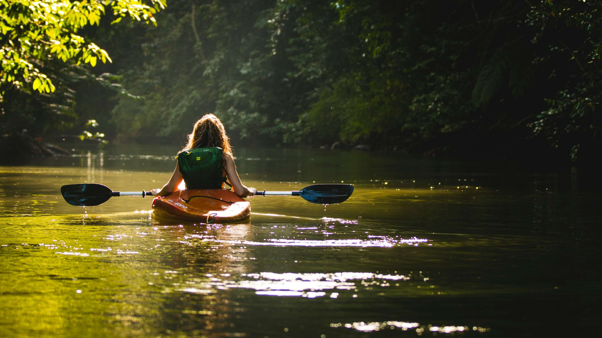
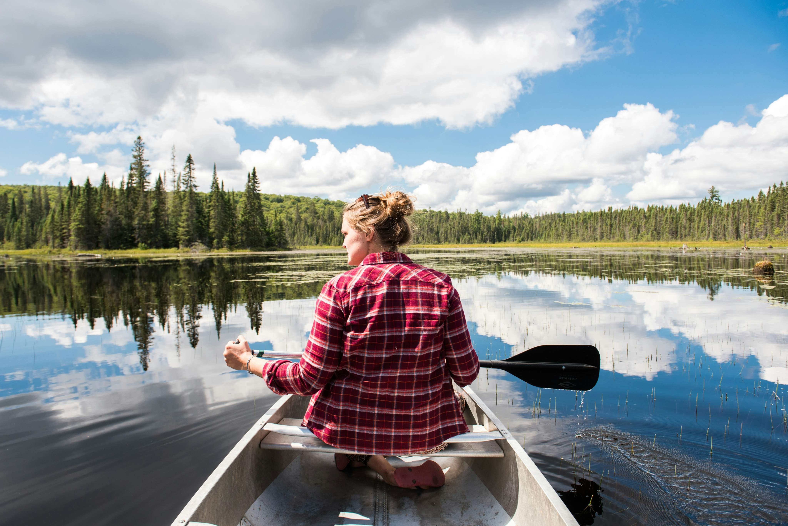
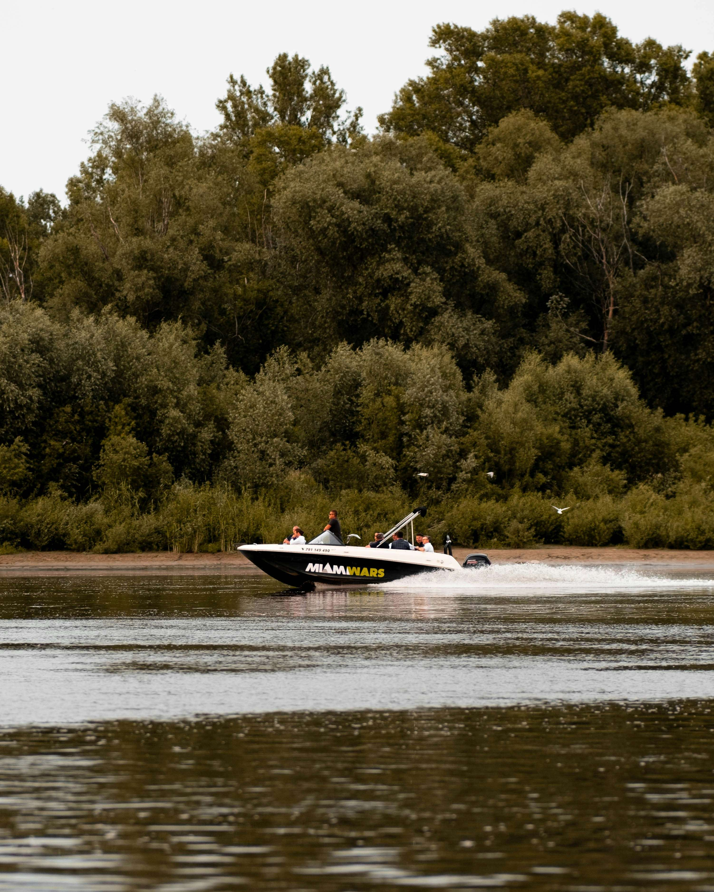

Kayaking
Have a go at paddling, rolling and rafting in one of our brand new kayaks.
- Max group size 8
- Ages 8+

Water-based activities all take place on Lochquarry itself. Whether you want to paddle a brand new kayak, explore the loch's islands by canoe or take the controls of a powerboat, there is an adventure on the water for every group. Our water activities are suitable for a range of ages, from canoeing for 6-year-olds to powerboating for older teenagers. Read on to find out more about each activity, including age limits and group sizes.

Have a go at paddling, rolling and rafting in one of our brand new kayaks.

Work single-handedly or in pairs to canoe the length of Lochquarry. You can even take a picnic with you and explore some of the Loch’s islands.

Take control of one of the Centre’s two RIBs out on Lochquarry and try your hand powerboating.